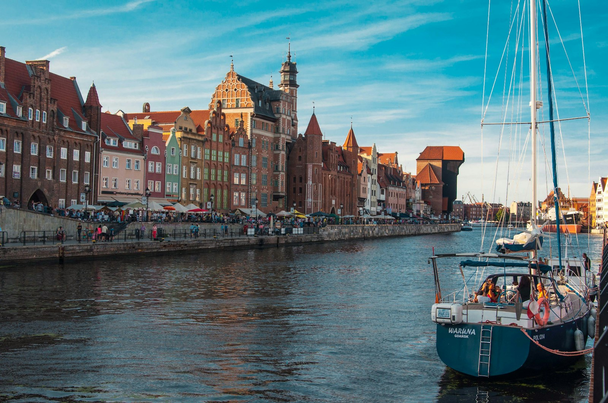
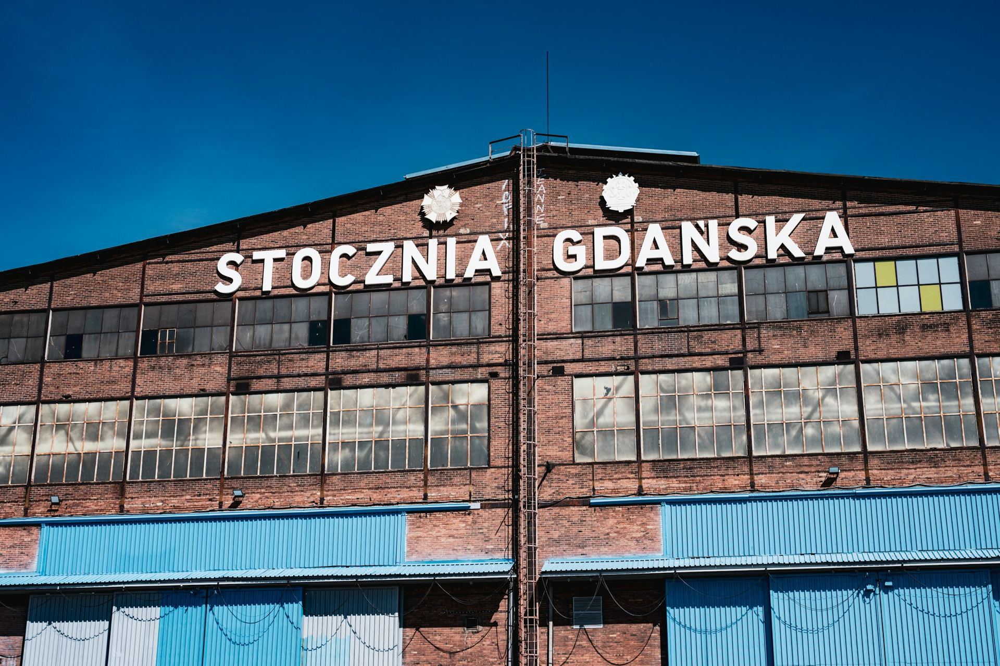
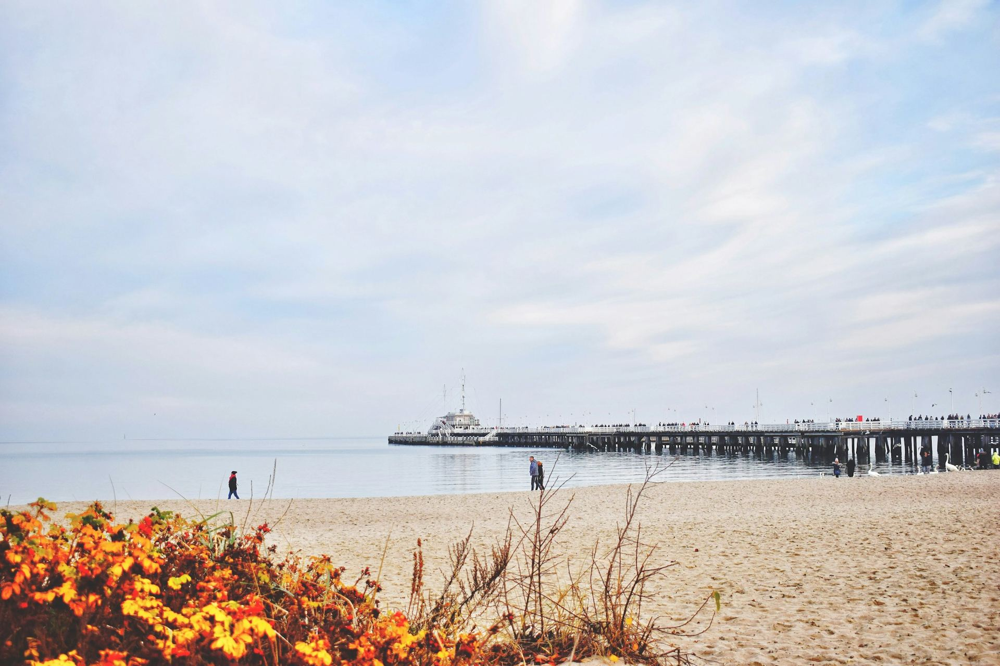
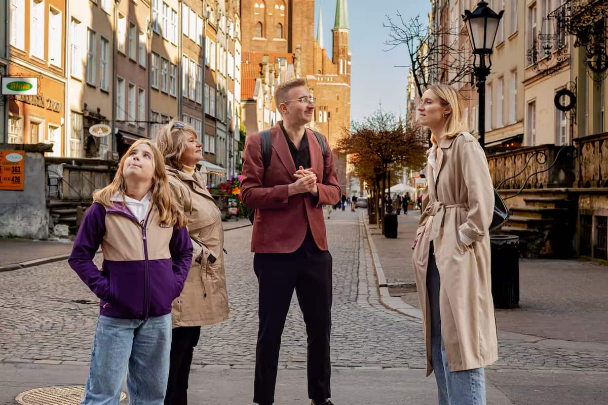
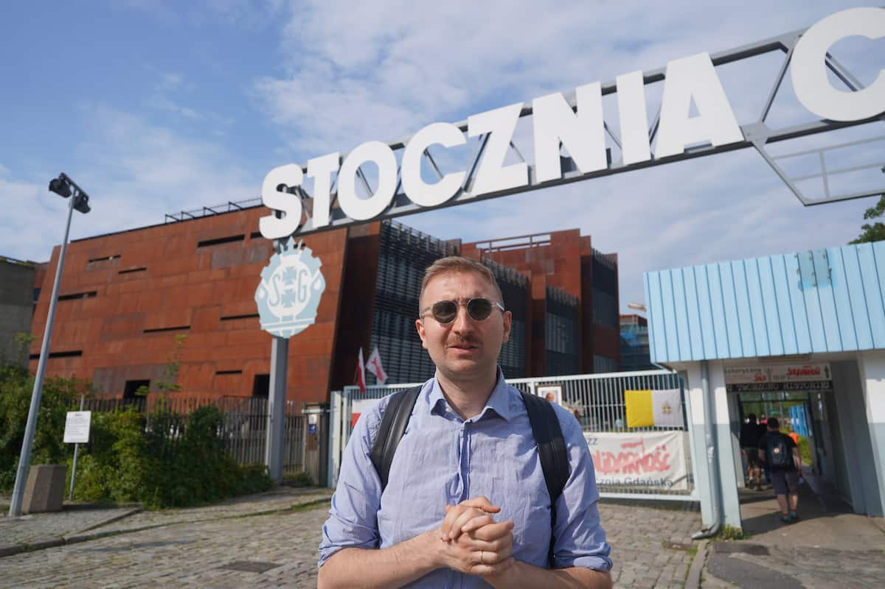
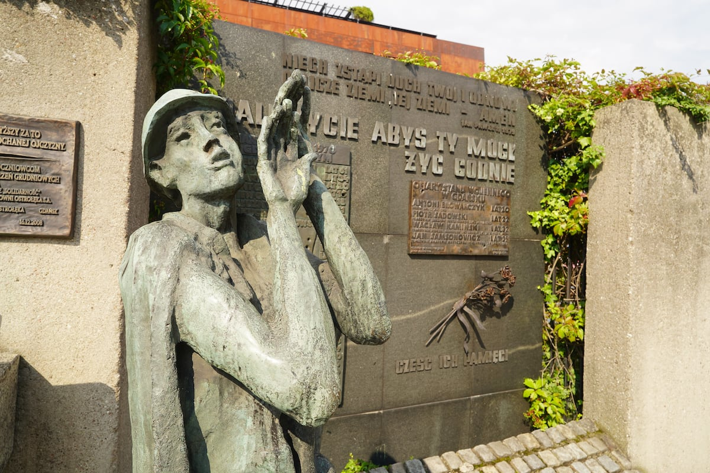
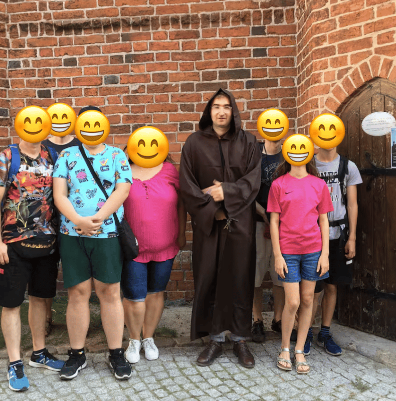
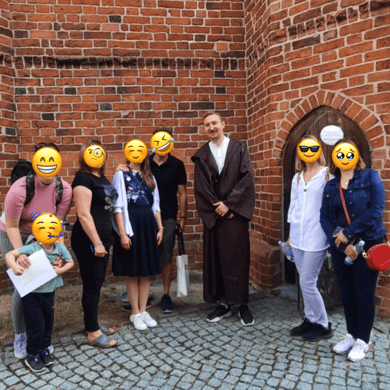
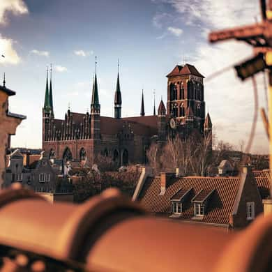

Gdańsk: a city of stories
Historic streets, amber details and stories by the waterfront.
Explore private Gdańsk tours ↗
Private Gdańsk tours in English and German.
History, people and the little details that stay with you.
I'm Tomasz. Come for the places. Leave with stories we discovered together.
I’m Tomasz, your guide to Gdańsk and Poland. Join me for history, local stories and a journey shaped around your curiosity — in English or German.
Historic streets, amber details and stories by the waterfront.
Explore private Gdańsk tours ↗
SOLIDARITY · HISTORY↗The shipyard, Solidarity and the people who changed Poland.
Explore the Solidarity tour ↗
A DAY ASHORE · YOUR OWN PACE↗A private day in Gdańsk and on the coast, planned around your port times.
Explore Gdańsk shore excursions ↗These are starting points for a personal enquiry. Your route, availability, inclusions and price will be confirmed before booking.

REAL PEOPLE / SHARED DISCOVERIESHidden lions, curious clues and stories to take home. Explore Gdańsk together, at a pace that works for your family.
Plan a family adventure ↗




“He is so knowledgeable that he was able to adjust the tour based on our questions.”
The view is the beginning. Your curiosity makes it personal.
Let’s explore the stories behind the streets — with time for your questions.
Tell me what you’re curious about ↗Tell me your dates, your interests and who’s coming along.
oczymmarzysz@icloud.com ↗See you in Poland,
Tomasz